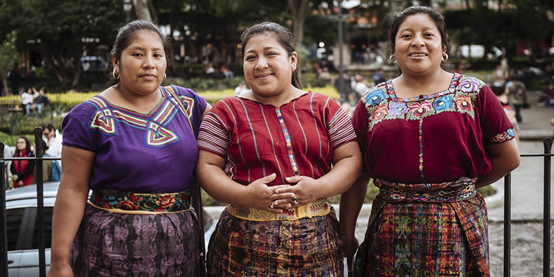

"A Miss melinda, le apasiona enseñar kaqchiquel a las futuras generaciones de Guatemala, para ella es muy agradable dedicar tiempo para impartir su lengua materna. Miss melinda es una maestra muy paciente y le gusta sobre todo enseñar a niños pequeños debido a la energia que tienen
| Nombre | Nacimiento | Nacionalidad | Ocupación |
|---|---|---|---|
| Melinda Sismith | 2 de Julio No nos confeso año | Guatemalteca | Maestra |
"Lo que más me gusta de mis alumnos es que me motivan y me hacen mejor persona, siempre me hacen reír. Tienen un sentido del humor único y cada día puedo aprender más de ellos. Son chicos inspiradores."
| mascota | nombre | raza |
|---|---|---|
| Gato | Lito | Siames |
| Perro | Lara | Labrador |
"Realmente cuando tengo tiempo libre me encanta ver series, de tipo telenovela como por ejemplo las colombianas."